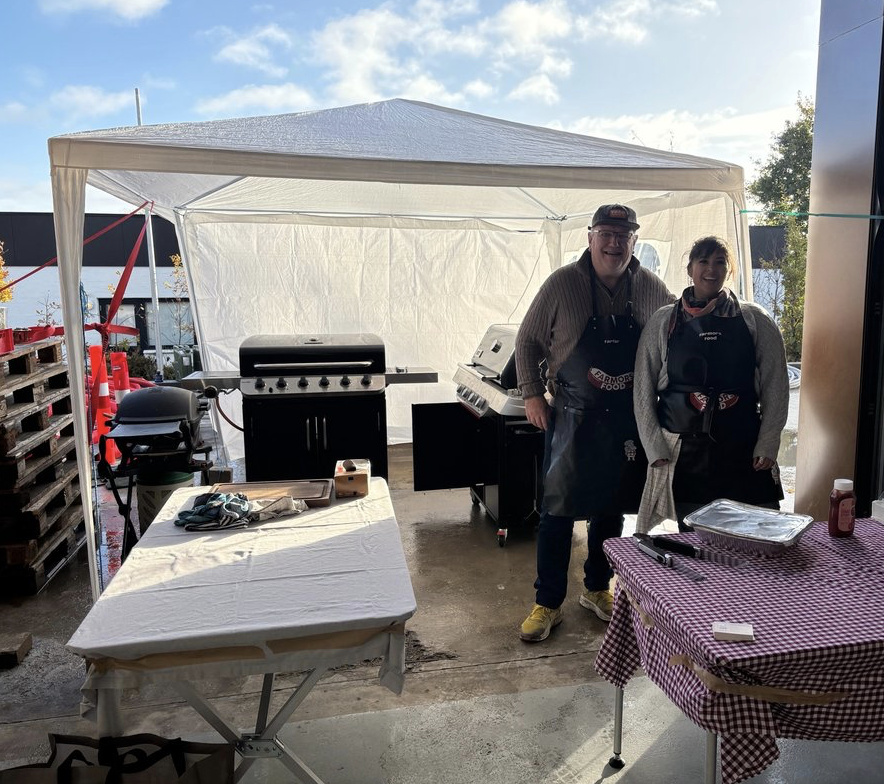

Produkter
Se mere om vores lækre produkter
Grillmenuer
Tilbehør
Vegetarpølser
Lavet med kærlighed
God smag


Ingen tilsætningsstoffer
Lokale råvarer


1

Friske råvarer
Produkter er lavet fra bunden med omtanke
2

Pakket med omtanke
Dine varer vakuumpakkes, med levering i hele landet
3

Frisk levering
Leveret direkte til døren, og klar til brug
4

Velbekomme
Tænd grillen og nyd maden med familie og venner

Historie & mission
Det hele startede med Farmors hjemmelavede pølser i Shanghai. Nu tilbyder vi i Danmark et bredt udvalg med smag og tradition..
LÆS MERE

Events

Vi serverer pølser og tilbehør til fester og events – op til 120 personer.
Lad os tage os af maden, så du kan nyde festen.